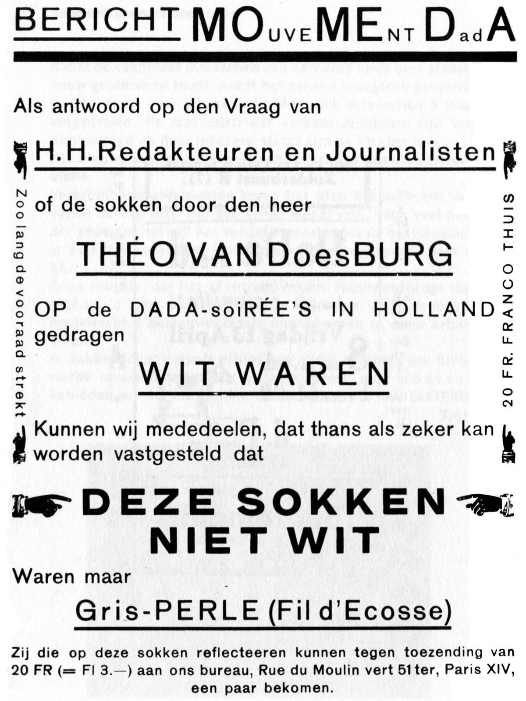

References / Editorial / 400
“Bericht Mouvement Dada”, Mécano no. 4/5, 1923
A mock advertisement in Mécano answers the press’s question about the color of van Doesburg’s socks at the Dutch Dada evenings, with pointing hands, heavy rules, and letters that change case inside words.
- Source
- Wikimedia Commons: Theo van Doesburg, Bericht Mouvement Dada (from Mécano no. 4/5)
- Creator
- Theo van Doesburg
- Made
- 1923 (issue dated 1923, published January 1924, per Commons)
- Style
- Dada (agent-proposed, not yet reviewed by a person)
- Moods
- Ironic, irreverent, typographic
- Evidence
- Inspected the Commons scan (1327 × 1769 px original, viewed at 1200 px). It is scanned from a reproduction in the book Holland’s bankroet door dada (Amsterdam: Ravijn, 1995, ISBN 9072768418), not from an original copy of the magazine. Text from the reverse side shows through the paper.
- Reviewed
- Rights
- Open license, stored. License: public domain. Rights policy

Context
Commons describes the page as “Bericht Mouvement Dada”, from Mécano no. 4/5 White, Blanc, Wit, Weiß (1923, published January 1924), by Theo van Doesburg, tagged PD-old. Commons.
The notice refers to the Dada soirées in Holland of 1923, which van Doesburg gave with Kurt Schwitters. See the soirée program and another Mécano page.
Observed
- The heading “BERICHT MOuveMEnt DadA” changes size and case inside the words: large capitals, small capitals, and lowercase in one line.
- Heavy black rules run under the heading and under each display line. Thinner rules underline the smaller lines.
- Display lines are in several sans-serif styles: a light wide grotesque, a condensed capital line, and a very heavy bold for “DEZE SOKKEN NIET WIT”.
- Four pointing-hand cuts appear: two point inward at the bold line, and two small ones stand vertically at the sides.
- Two lines run vertically up the margins: “Zoo lang de voorraad strekt” at left and “20 FR. FRANCO THUIS” at right.
- The page is black on white with no second color. Text from the reverse shows faintly through.
Why it belongs
The page borrows the layout of a shop notice and fills it with a joke, which is a typical Dada move against commercial print. The type is clean, and the disorder is in the case changes and the content.
Borrow
Write a notice in the voice of an advertisement, with pointing hands aimed at the key line.
Run short side labels vertically up both margins.
Underline each display line with a heavy rule of a different length.
Measured
Machine-extracted by tools/image-traits.py on . Full measurement.
- Mean chroma
- 0
- Palette
- #ffffff 55%
- #f4f4f4 22%
- #020202 4%
- #6c6c6c 2%
- #9e9e9e 2%
- #e8e8e8 2%
- #868686 2%
- #515151 2%

